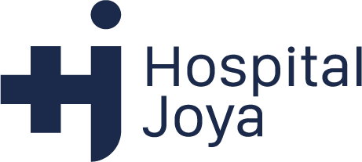
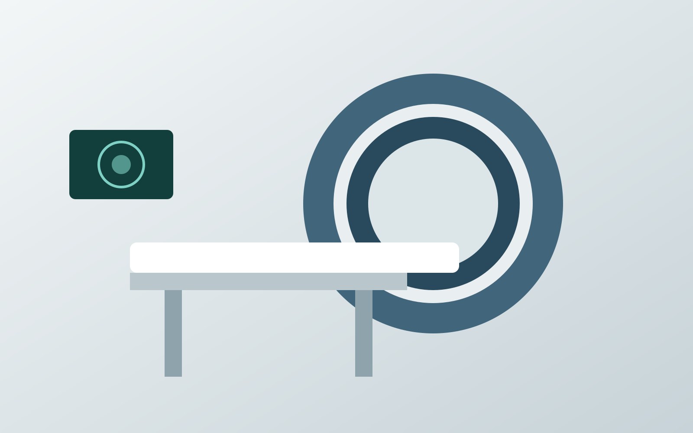
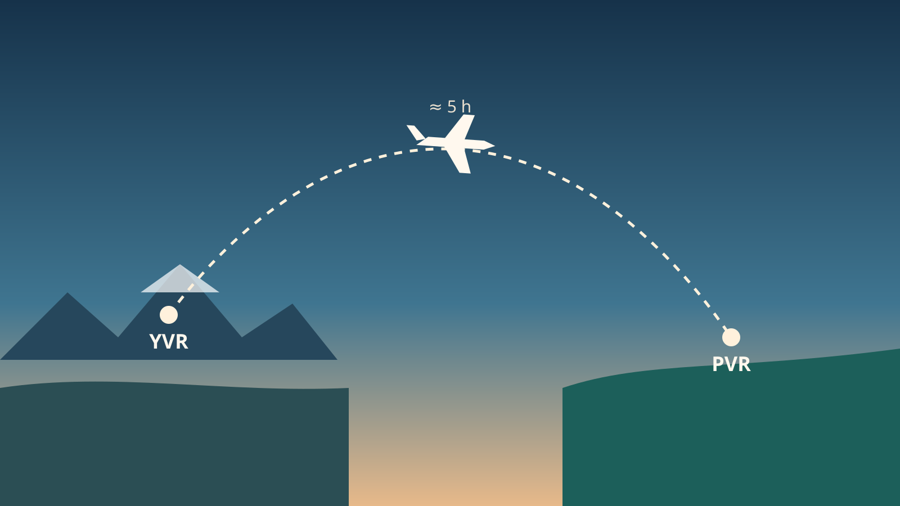
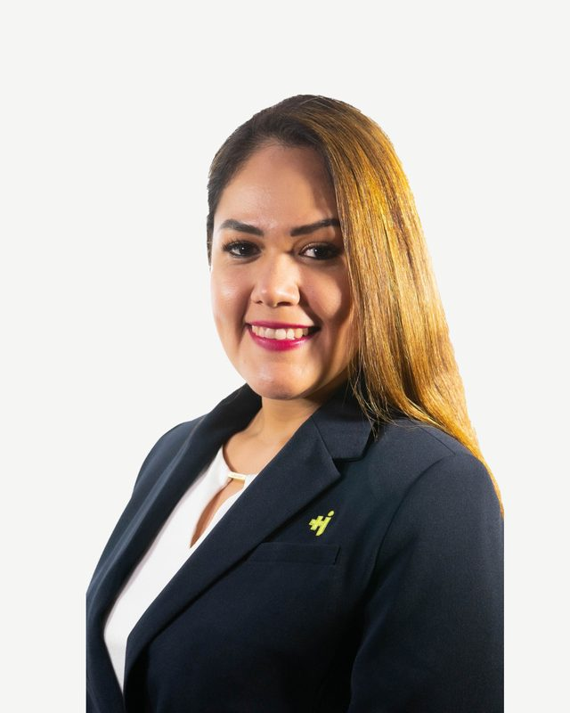
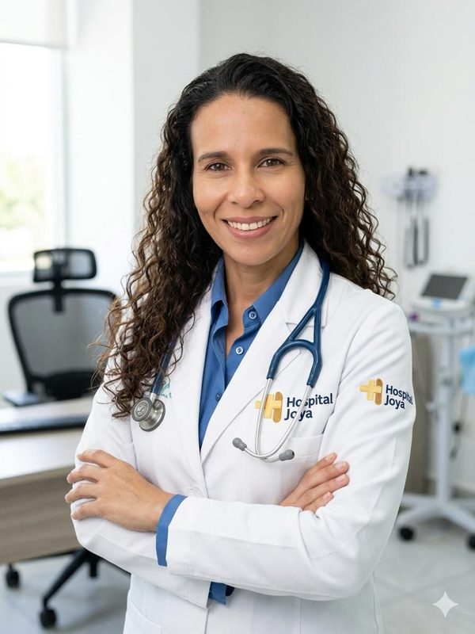

Ahorros significativos en costos
Reciba tratamiento de clase mundial con costos entre un 50 y 70 % menores que en Canadá.
Importante. Los montos que verá en esta página son ejemplos ilustrativos o rangos de mercado con su fuente; no son cotizaciones. Cada plan se cotiza por escrito después de la revisión médica.
MedElite International Health · Vancouver, BC
Atención médica de clase mundial en México, confiada por pacientes en Canadá. En MedElite International Health lo conectamos con hospitales de primer nivel y especialistas reconocidos en México, con atención excepcional a una fracción del costo en Canadá, sin comprometer la calidad ni la seguridad. Cuidado personalizado. Precios transparentes. Soporte total en cada paso del camino.
Qué hacemos
MedElite International Health brinda un acceso fluido a servicios de salud de primera calidad en México para pacientes que buscan un tratamiento de alta calidad, oportuno y asequible.
A través de nuestra red de hospitales acreditados internacionalmente y profesionales médicos con experiencia, coordinamos todo su viaje, desde la consulta inicial hasta el seguimiento posterior al tratamiento.
Reciba tratamiento de clase mundial con costos entre un 50 y 70 % menores que en Canadá.
Colaboramos con hospitales certificados y especialistas altamente calificados.
Desde los arreglos de viaje hasta la recuperación, lo guiamos en cada paso.
Acceda a la atención que necesita, cuando la necesite.
Los porcentajes de ahorro son declaraciones de MedElite International Health publicadas en su sitio oficial, medeliteofficial.com; cada caso se cotiza por separado. La tecnología y la IA nos ayudan a coordinar más rápido; nunca sustituyen el juicio clínico.
Servicios
Lo conectamos con especialistas médicos de clase mundial y procedimientos avanzados en los mejores hospitales acreditados de México.
Acceda a procedimientos especializados con tiempos de espera reducidos y experiencia quirúrgica de clase mundial.
Odontología restauradora y estética avanzada a una fracción del costo, sin perder calidad.
Revisiones integrales y diagnósticos preventivos realizados por destacados expertos médicos.
Mejoras estéticas seguras y profesionales realizadas por cirujanos plásticos certificados.
Programas de recuperación personalizados en instalaciones modernas, con terapeutas físicos dedicados.
Obtenga claridad con revisiones detalladas de su diagnóstico por los especialistas más reconocidos de México.
Acceda a una red de médicos certificados y cirujanos con formación internacional en México.
Trabajamos exclusivamente con hospitales acreditados por la Certificación CLACS (Comité Latinoamericano de Calidad en Salud) para asegurar los más altos estándares de seguridad.
Desde la evaluación inicial hasta su regreso a casa, nuestro equipo le brinda apoyo personalizado las 24 horas, los 7 días.
Ahorre hasta un 70 % en procedimientos médicos sin comprometer la calidad ni la experiencia quirúrgica.
Si se encuentra en Canadá y enfrenta largas esperas o costos elevados, MedElite International Health le ofrece una alternativa más rápida y confiable. Le conectamos con hospitales acreditados internacionalmente y especialistas de primer nivel en México, con atención premium a costos significativamente menores y apoyo total de principio a fin.
Coordinamos tratamientos especializados en diversas áreas médicas para asegurar que reciba el más alto estándar de atención en México.
Reemplazos articulares avanzados y medicina deportiva con tiempos de espera mínimos.
Tratamientos cardiovasculares integrales y cirugías de corazón de mínima invasión.
Segundas opiniones expertas y acceso a protocolos avanzados de diagnóstico y tratamiento.
Procedimientos metabólicos y para pérdida de peso realizados por cirujanos de clase mundial.
Odontología restauradora y estética integral con tecnología de última generación.
Mejoras estéticas seguras y profesionales con cirujanos certificados por el consejo de su especialidad.
Tecnología reproductiva avanzada y soluciones humanas de planificación familiar.
Evaluaciones de salud proactivas e integrales, con diagnósticos de nivel élite.
Nuestros asesores le contactarán pronto para crear su itinerario médico y darle un panorama claro de los costos y la logística. Para asistirle mejor, tenga listo: el tipo de tratamiento que necesita, sus fechas de viaje preferidas y su ciudad y provincia en Canadá.
Solicitar mi cotizaciónCómo funciona
Entendemos que buscar atención médica en el extranjero puede sentirse abrumador. Por eso diseñamos un proceso simple y transparente, para que siempre sepa qué esperar y se sienta totalmente apoyado de principio a fin.
Con MedElite nunca recorrerá este camino solo. Combinamos experiencia médica, coordinación personalizada y calidez humana para que avance con total confianza, claridad y paz mental.
Si el médico revisor considera que no es seguro viajar, no le cotizamos un viaje: le orientamos para atenderse en Canadá. Su seguridad va primero.
| Criterio | Qué significa para usted |
|---|---|
| Especialidad | Subespecialista con volumen y resultados en ese procedimiento |
| Disponibilidad | Agenda quirúrgica, quirófano, cama y cupo de recuperación sincronizados |
| Geografía | El hospital Joya más cercano a donde usted pasa el invierno, o al vuelo directo desde su ciudad (YVR, YYZ, YOW…) |
| Precio | Precio cerrado por escrito, sin cambios de último momento |
| Idioma y cultura | Inglés, francés o español; navegadora afín cuando es posible |
| Riesgo clínico | Valoración clínica previa; los casos complejos se atienden solo en Joya Marina Vallarta (UCI, hemodinamia) |
| Resultados | Se toman en cuenta los resultados clínicos y la satisfacción de los pacientes de cada especialista |
Red de hospitales privados en Riviera Nayarit, Puerto Vallarta, San Miguel de Allende, Guadalajara, Cancún, Playa del Carmen, Querétaro, Chapala y La Peñita. Área de Seguros Internacionales para pago directo, según información publicada por el grupo.
Equipos médicos expertos con dominio de inglés y español, para una comunicación fluida en cada paso.
Su plan, sus pagos y sus comprobantes, organizados en un solo expediente administrativo, sin trámites duplicados.
La IA nos ayuda a responderle rápido en inglés, francés o español, a ordenar su cuestionario para el médico revisor y a enviarle recordatorios y resúmenes bilingües. La decisión clínica siempre es humana.
Paso a paso
| Etapa | Qué hacemos | Su toque personal |
|---|---|---|
| Primer contacto | Información clara en inglés, francés o español, y una respuesta personal a su mensaje | Respuesta humana en horario canadiense, incluido el de Vancouver (UTC−8/−7) |
| Cuestionario y revisión clínica | Cuestionario por procedimiento, carga de estudios, médico revisor: apto, apto con condiciones, o no apto | Explicación personal del porqué de cada estudio |
| Médico revisor | Decide, antes de cotizar, si el paciente puede viajar con seguridad | Si no es apto, se explica con claridad y se deriva en Canadá |
| Especialista y hospital | Elegimos especialista y hospital Joya según los criterios de arriba | El paciente conoce a su cirujano por video antes de pagar |
| Su presupuesto | Paquete todo incluido con precio fijo en CAD, inclusiones, exclusiones y política de complicaciones | Revisamos el presupuesto con usted por teléfono, sin presión |
| Coordinación del viaje | Le orientamos sobre vuelos directos, hospedaje de recuperación, traslados, acompañante y requisitos de entrada | Asiento, movilidad y dieta adaptados al procedimiento |
| Navegación clínica | Una navegadora bilingüe con formación en salud, de principio a fin | Un solo nombre y un solo número; conoce a la familia |
| Estancia | Visita diaria, reporte a la familia con consentimiento, enlace con enfermería | Hospitalidad: comida, idioma, cultura |
| Postoperatorio y continuidad | Informe de alta en inglés (o francés), teleconsultas a 1, 4 y 12 semanas, envío al médico de familia en Canadá | Llamada de la navegadora los días 3 y 10 en casa |
| Pagos, seguros y facturación | Anticipo y liquidación en CAD; pago directo con aseguradoras a través del área de Seguros Internacionales de Hospitales Joya; comprobante fiscal mexicano (CFDI) para pacientes extranjeros | Un solo recibo claro para el paciente |
| Calidad y datos de salud | Credenciales verificadas, protocolos, auditoría y privacidad (PHIPA, PIPEDA, LFPDPPP). Los datos biométricos se tratan como sensibles | Consentimientos en el idioma del paciente |
| Urgencias snowbird | Membresía con perfil precargado, despacho a hospital Joya, enlace con la aseguradora de viaje | Una persona con la familia en el hospital |
Destinos y clínicas aliadas

En MedElite International Health colaboramos con Hospital Joya, una prestigiada red de hospitales privados ubicados en algunos de los destinos médicos más consolidados y confiables de México. Cada sede ha sido seleccionada por su calidad médica, su infraestructura y su capacidad de brindar una experiencia segura y confortable a pacientes internacionales.
Riviera Nayarit
Ubicado en una zona costera exclusiva, ideal para la recuperación, que une medicina moderna y tranquilidad.
Ver instalaciones — Hospital Joya Riviera Nayarit (sitio de Hospital Joya)
Puerto Vallarta
Hospital consolidado, con amplia experiencia en pacientes internacionales y una sólida reputación de atención de calidad.
Ver instalaciones — Hospital Joya Marina Vallarta (sitio de Hospital Joya)
San Miguel de Allende
Una ubicación premium, reconocida por su atención personalizada en un entorno seguro y culturalmente rico.
Ver instalaciones — Hospital Joya San Miguel de Allende (sitio de Hospital Joya)
Guadalajara
Situado en una de las principales ciudades médicas de México, con procedimientos avanzados y médicos altamente especializados.
Ver instalaciones — Hospital Joya Guadalajara (sitio de Hospital Joya)
Cancún
Destino líder de turismo médico que combina accesibilidad, infraestructura moderna y servicios para pacientes internacionales.
Ver instalaciones — Hospital Joya Cancún (sitio de Hospital Joya)
Playa del Carmen
Instalación moderna en la Riviera Maya, ideal para pacientes que buscan calidad y un entorno propicio para la recuperación.
Ver instalaciones — Hospital Joya Playa del Carmen (sitio de Hospital Joya)
Querétaro
Ubicado en un polo médico en expansión, destacado por su innovación, seguridad y servicios de salud de alta calidad.
Ver instalaciones — Hospital Joya Momentum Querétaro (sitio de Hospital Joya)
Chapala
Centro médico premium en Chapala, México, que ofrece a pacientes canadienses altos estándares de seguridad y atención personalizada para una recuperación tranquila junto al lago.
Ver instalaciones — Hospital Joya Chapala (sitio de Hospital Joya)
La Peñita
Instalación costera moderna que brinda atención de confianza a turistas médicos canadienses. Con altos estándares de seguridad y calidad, ofrece un entorno tranquilo frente al mar, ideal para un descanso reparador y una recuperación exitosa.
Ver instalaciones — Hospital Joya La Peñita (sitio de Hospital Joya)

Las imágenes de esta sección son ilustraciones. Los datos de capacidad de cada hospital provienen de lo publicado por Grupo Médico Joya (hospitaljoya.com); MedElite no habla en nombre del hospital.
Estas instalaciones son reconocidas por ofrecer un alto estándar de atención y de experiencia del paciente. Características clave:
Priorizamos trabajar con hospitales que siguen estrictos protocolos médicos y normas de calidad.
Nuestro enfoque es simple: estándares reales, hospitales reales, resultados reales, sin promesas exageradas.
Elegir el hospital adecuado es una de las decisiones más importantes de su camino médico. Al aliarse con Hospital Joya, MedElite asegura:
Con MedElite y Hospital Joya no solo elige un destino: elige una red médica confiable, diseñada para pacientes internacionales.
Salas quirúrgicas de vanguardia, equipadas con la tecnología más reciente de diagnóstico e intervención.
Equipos médicos expertos con dominio de inglés y español, para una comunicación fluida en cada paso.
Suites de recuperación amplias y lujosas, diseñadas para máxima comodidad, seguridad y total privacidad.
Sedes cerca de aeropuertos internacionales, para facilitar el viaje y el transporte coordinado.
Nuestros coordinadores profesionales están listos para guiarle en su camino médico a México. Desde la elección de la clínica hasta la logística del viaje, aseguramos una experiencia fluida y tranquilizadora, adaptada a sus necesidades de salud.
Solicitar una consultaTiempos de espera en Canadá
La espera nacional más larga entre las especialidades quirúrgicas habituales: 48.6 semanas (Fraser 2025). Rodilla, cadera y hombro están entre los procedimientos que más se buscan.
La especialidad con más canadienses atendidos fuera del país en 2025 (12,697).
10,320 canadienses al extranjero en 2025. Incluye procedimientos electivos bien protocolizados.
Colonoscopía, angiografía y resonancia. La resonancia espera 18.1 semanas en Canadá. Un chequeo es un buen primer paso.
Ideal para snowbirds de Ontario y de la Costa Oeste: cuidarse sin interrumpir el invierno y conocernos antes de necesitar una cirugía.
Para snowbirds
Una membresía de temporada con perfil médico precargado, un botón de urgencia hacia el hospital Joya más cercano, coordinación con su aseguradora de viaje y un chequeo anual opcional. No exige una cirugía: construye la relación antes de que haga falta un quirófano.
Ejemplo / rango de mercado Precio de ejemplo usado en los casos de esta página: CAD 290 por temporada. No es una tarifa vigente; pregúntenos por la tarifa actual.
Para Vancouver y el resto de C.B., la membresía cubre tanto a quien ya inverna en la Bahía como a quien vuela en un viaje corto de chequeo: el mismo número, la misma navegadora, el mismo hospital de referencia.
Costa Oeste canadiense
Ontario concentra el mayor volumen de canadienses que se atienden fuera del país (51,538). Columbia Británica es el segundo (25,698) y, a diferencia de Ontario, tiene una espera mediana más larga: 32.2 semanas del médico familiar al tratamiento en 2025, frente a 19.2 en Ontario y 28.6 en el conjunto del país (Fraser Institute, Waiting Your Turn 2025). Un comentario del propio instituto señala que esa espera en C.B. fue la más larga registrada en la provincia desde 1993.
Hay que leer dos relojes distintos y no mezclarlos. El Ministerio de Salud de C.B. midió, para 2025–2026, 97,963 personas en la lista quirúrgica y una espera mediana de 6.0 semanas: ese dato corre desde la hoja de programación de la cirugía hasta la operación, y no incluye la espera para ver al especialista. El dato del Fraser Institute sí incluye esa primera espera. Ambos son reales; describen tramos distintos del mismo recorrido.
El puente aéreo es directo. En la semana del 16 al 22 de noviembre de 2026, Directflights.com reportaba unos 26 vuelos semanales sin escalas entre Vancouver (YVR) y Puerto Vallarta (PVR), operados por WestJet, Air Canada y Flair Airlines, con un tiempo de vuelo de unas 5 a 5 horas 10 minutos. En 2025, SECTUR Jalisco informó que Air Canada incrementó esa ruta de seis a siete frecuencias semanales en temporada alta. También hay vuelo directo de Flair entre Vancouver y Guadalajara, útil si un caso se extiende a la red Joya en esa ciudad.
Muchos snowbirds de C.B. ya pasan el invierno en la Bahía (reportajes del CBC y del Globe and Mail). Por eso MedElite acompaña tanto a quien vuela para atenderse como a quien ya está en Marina Vallarta, Nuevo Vallarta o Bucerías y necesita un médico de cabecera, un chequeo o una urgencia coordinada.

Por qué México
Datos públicos con su fuente. No son resultados de MedElite ni tarifas de Hospitales Joya.
México se ha convertido en uno de los destinos más respetados para la atención médica avanzada, al combinar experiencia, innovación y accesibilidad.
Muchos hospitales están acreditados por organizaciones como la Joint Commission International, lo que garantiza seguridad y calidad de clase mundial.
Médicos con formación internacional y amplia experiencia en la atención de pacientes de todo el mundo.
Tecnología avanzada, infraestructura moderna y entornos excepcionales para el paciente.
Miles de pacientes internacionales eligen México cada año por sus resultados confiables y de alta calidad.
Texto de MedElite International Health (medeliteofficial.com). Abajo, datos públicos con su fuente.
| Indicador | Dato | Fuente |
|---|---|---|
| Pacientes de EE. UU. y Canadá en México, 2024 | 1.4 millones; México, 2.º destino mundial después de Tailandia | El Financiero (nov 2025) |
| Canadienses atendidos en el extranjero, 2025 | 105,529 (2.1 % de los procedimientos); el estudio advierte que puede ser una subestimación | Fraser Institute |
| Ontario | 51,538 pacientes, el mayor volumen provincial | Fraser Institute |
| Columbia Británica | 25,698 pacientes, el segundo volumen provincial | Fraser Institute (vía reportes del estudio 2025) |
| Canadienses a Jalisco por avión, 2024 | Más de 490 mil; 24.5 % de los turistas extranjeros de Jalisco; 1 de cada 3 viajeros internacionales en PVR | SECTUR Jalisco vía El Informador (jun 2025) |
| Conectividad aérea PVR–Canadá | 17 ciudades canadienses con vuelo directo (anuncio de 2025, con nuevas rutas a Toronto, Ottawa y Hamilton). En nov 2026, SECTUR Jalisco habló de «23 vuelos directos desde Canadá» con cinco aerolíneas, tras sumar Edmonton con Porter. | El Informador; SECTUR Jalisco (2025–2026) |
| Snowbirds en Puerto Vallarta | Un directorio de snowbirds estima que el 4 % de los snowbirds canadienses invernan aquí; el Globe and Mail describe la Bahía como un destino consolidado, con «miles» de canadienses en invierno. | snowbyrds.ca; The Globe and Mail |
Urología 12,697; cirugía general 10,320; medicina interna (colonoscopía, endoscopía, angiografía) 8,304; oftalmología 6,482. Fuente: Fraser Institute 2025. A estas se suman la ortopedia (la espera más larga entre las especialidades quirúrgicas habituales: 48.6 semanas a nivel nacional) y la resonancia (18.1 semanas).
| Usted es… | Perfil | Lo que busca | Cómo le ayudamos |
|---|---|---|---|
| Snowbird en la Bahía | 55–80 años; Ontario, C.B., Alberta o las Praderas; ya pasa 1–5 meses en Puerto Vallarta o Nuevo Vallarta | Atenderse sin interrumpir su invierno; seguridad ante una urgencia | Membresía Snowbird, chequeos, cataratas, urgencias coordinadas |
| Paciente en lista de espera | 45–75 años, con dolor o limitación, que ya vio a un especialista | Tiempo: recuperar movilidad meses antes | Rodilla, cadera, hombro, urología, cirugía general |
| Quien ya pagaría en privado | 35–65 años, ingresos medios-altos, compara clínicas privadas de Canadá o EE. UU. | Precio total transparente y calidad | Dental, estética médica, ginecología, chequeo ejecutivo |
| Asegurado internacional o empleador | Expatriados o empleados con póliza internacional | Pago directo y gestión del reclamo | Gestión de su seguro internacional con Hospitales Joya |
Gráficas
Datos públicos con su fuente. Ninguna barra representa una tarifa de Hospitales Joya.
Ontario y Columbia Británica, los dos mayores volúmenes provinciales publicados (Fraser Institute).
Fraser Institute, 2025. La ortopedia y la resonancia son nacionales.
Cuatro especialidades publicadas en el comunicado del Fraser Institute, 2025.
Semanas medianas, Fraser Institute 2025. Hacerse un chequeo en la Bahía ahorra, sobre todo, tiempo.
Porcentaje típico según fuentes de mercado; no es una cotización. En cataratas el ahorro es bajo o nulo, y se lo decimos con claridad.
Ejemplo / rango de mercado Fuentes: Travel4Treatment, International Patient Facilitators 2025, Placidway, Wait or Fly, MedVenture Mexico. Son rangos de mercado, no precios de MedElite ni de Hospitales Joya: su precio se confirma por escrito después de la revisión médica.
| Procedimiento | Canadá privado | México (mercado) | Ahorro típico |
|---|---|---|---|
| Reemplazo total de rodilla | CAD 15,000–40,000 | USD 13,500–17,000 | 65 % |
| Reemplazo total de cadera | CAD 18,000–40,000 | USD 13,000–16,000 | 65 % |
| Bypass coronario | CAD 30,000–55,000 | CAD 8,000–18,000 | 65 % |
| All-on-4/6 (arcada) | CAD 20,000–40,000 | USD 9,500–13,500 | 55 % |
| Manga gástrica | CAD 15,000–30,000 | USD 4,500–8,000 | 70 % |
| Cataratas (por ojo) | CAD 1,500–6,300 | CAD 3,290–5,110 | Bajo o nulo |
| Chequeo ejecutivo | Variable, con esperas de imagen | USD 433–3,665 | Tiempo más que precio |
La red Hospital Joya en nueve destinos de México, incluido el corredor Puerto Vallarta–Nayarit donde muchos canadienses ya pasan el invierno; una evaluación médica antes de cualquier cotización; coordinación desde Vancouver, y una plataforma apoyada en IA para responderle en su idioma. La decisión clínica siempre es humana.
| Tema | Qué dicen los datos | Cómo lo cuidamos |
|---|---|---|
| Confianza | Hay muchos paquetes comerciales en el mercado | Médico revisor, credenciales verificables, precios cerrados por escrito |
| Complicaciones al regresar | El 41 % de médicos canadienses encuestados en 2014 reportó complicaciones en pacientes que volvieron (PMC); costos infecciosos de CAD 6,288–20,741 por caso (JAMMI 2021) | Criterios de exclusión, profilaxis, informe de alta, enlace con el médico local y teleseguimiento |
| Cobertura pública | OHIP exige aprobación previa por escrito y no cubre viaje ni hospedaje | Se lo explicamos desde el inicio: es pago privado o con seguro |
| Privacidad de salud | PIPEDA y PHIPA en Canadá; LFPDPPP en México (datos sensibles, incluidos biométricos) | Consentimiento expreso para transferencia internacional, cifrado, mínimo acceso |
Diez recorridos de ejemplo
Ejemplo / rango de mercado Todos los nombres son ficticios. Montos y tiempos son ilustrativos, no cotizaciones. Abra cada caso para ver el recorrido completo.
Toque personalizado. Navegadora desde el día 1 y plan de comidas para el vuelo de regreso.
La diferencia MedElite. Valoración cardiometabólica previa (HbA1c, ECG). El médico revisor puede detener el viaje si no es seguro.
Toque personalizado. Un mismo fisioterapeuta todos los días; la hija recibe reporte diario.
La diferencia MedElite. Suite adaptada, anti-trombosis y plan de vuelo seguro. Informe y protocolo enviados al fisioterapeuta en Ottawa.
Toque personalizado. La misma navegadora en ambos viajes; dentista en Calgary enlazado.
La diferencia MedElite. Evaluación de hueso previa (cone-beam) y garantía escrita del implante.
Toque personalizado. Consentimiento con escenarios A, B y C, cada uno con precio y plan.
La diferencia MedElite. El triage filtra cualquier síndrome coronario agudo: esa urgencia se atiende en Canadá. No se vende urgencia.
Toque personalizado. Recogida en su condominio y carta para su médico de familia en Toronto.
La diferencia MedElite. Convierte meses de espera en 36 horas, sin interrumpir el invierno.
Toque personalizado. Sin fotos de marketing sin consentimiento específico y revocable.
La diferencia MedElite. Se combina la cirugía con una revisión médica dermatológica; la privacidad es total.
Toque personalizado. Recordatorios de gotas por WhatsApp a él y a su hija en Canadá.
La diferencia MedElite. La navegadora explica con honestidad que el valor no es el precio, sino hacerlo durante su invierno.
Toque personalizado. Atención en español para ella y resumen en inglés para su esposo.
La diferencia MedElite. Hemoglobina 9.1: el médico revisor pospone el viaje hasta corregir la anemia. Seguridad antes que venta.
Toque personalizado. Una persona acompaña a Carol en el hospital y llama a sus hijos en Canadá.
La diferencia MedElite. La membresía precarga alergias, medicamentos y seguro. Es el caso que ninguna plataforma de reservas cubre.
Toque personalizado. El paciente no llena los formularios de seguro: los prepara la navegadora y él firma.
La diferencia MedElite. La navegadora arma el expediente en el formato de la aseguradora y gestiona el pago directo.
Sobre nosotros
Elegir atención médica es una de las decisiones más personales que tomará. En MedElite International Health creemos que esa decisión nunca debe verse limitada por el costo, las largas esperas o la incertidumbre. Estamos aquí para ofrecer algo distinto: una experiencia de salud confiable, guiada y de alto nivel.
MedElite nació de una visión simple pero poderosa: brindar a los pacientes en Canadá acceso a una atención médica excepcional, sin concesiones. Tras ser testigos de los desafíos que muchos pacientes enfrentan (retrasos, costos altos y falta de acceso a tratamientos oportunos), supimos que debía existir una forma mejor.
Al mismo tiempo, México se ha convertido discretamente en un líder mundial en servicios de salud de alta calidad, con hospitales acreditados internacionalmente y especialistas altamente capacitados que ofrecen resultados sobresalientes. MedElite cierra esa brecha.
Conectamos cuidadosamente a nuestros pacientes con los profesionales médicos adecuados y gestionamos cada detalle del viaje, para que puedan enfocarse en lo que realmente importa: su salud y su tranquilidad.
Sabemos que la confianza se gana. Por eso priorizamos la transparencia, la honestidad y la comunicación clara en cada paso.
Colaboramos exclusivamente con hospitales y especialistas de primer nivel que cumplen rigurosos estándares internacionales.
No hay dos pacientes iguales. Cada camino se adapta cuidadosamente a sus necesidades, metas y comodidad.
Más allá de la logística, ofrecemos seguridad, guía y apoyo, porque usted no es solo un paciente: es una persona.
Sabemos que considerar atención médica en el extranjero puede sentirse abrumador. Por eso MedElite está diseñado para apoyarle en cada etapa, desde su primera pregunta hasta su recuperación total. Con nosotros obtiene más que acceso a la salud: obtiene claridad, confianza y un equipo que realmente le acompaña.
Nuestro equipo multidisciplinario combina excelencia clínica, coordinación internacional y un profundo compromiso con el paciente, para que su camino de salud en México sea seguro y fluido.

Fundadora y Directora Ejecutiva
Como Fundadora y CEO de MedElite, Erika lidera la visión, las alianzas estratégicas y la excelencia operativa de la empresa. Con su amplia experiencia en administración de salud y su sólida conexión con la red de Hospitales Joya, se dedica a crear caminos médicos fluidos y centrados en el paciente para clientes internacionales. Su liderazgo garantiza que cada paciente reciba orientación confiable, apoyo personalizado y acceso a servicios de salud excepcionales en México.

Directora Médica y Asesora de Pacientes
La Dra. Belloso se desempeña como representante médica oficial de Hospitales Joya en México y asegura una coordinación fluida entre los pacientes y los proveedores de atención médica. Guía a los pacientes en sus opciones de tratamiento y les brinda apoyo durante todo su proceso médico, con experiencia y atención compasiva.
MedElite International Health es la empresa canadiense de Erika Cruz Joya, con sede en Vancouver. Acompañamos a pacientes canadienses a recibir atención de alta especialidad en México, en la red aliada de Hospitales Joya. No somos una agencia de viajes ni un directorio: somos un equipo clínico y de coordinación que responde por cada etapa de su recorrido.
Protocolo clínico. Cada caso es revisado por un médico antes de cualquier cotización. Aplicamos criterios de inclusión y exclusión por procedimiento, consentimiento informado en el idioma del paciente, plan de profilaxis y de vuelo seguro, informe de alta para el médico de familia y seguimiento a 1, 4 y 12 semanas.
Calidad y seguridad. Procesos documentados, especialistas con certificación de consejo y medición de la satisfacción y de los resultados.
Privacidad. Tratamos su información de salud conforme a PIPEDA y PHIPA en Canadá y a la LFPDPPP en México, con consentimiento expreso, cifrado y acceso mínimo. Nunca usamos sus datos ni imágenes con fines publicitarios sin su autorización expresa y revocable. Los datos biométricos se tratan como sensibles.
Testimonios
Experiencias reales de pacientes canadienses que encontraron acceso más rápido, ahorros significativos y experiencia médica de clase mundial a través de la red de salud de MedElite en México.
«Quiero compartir cómo encontré ayuda en México. Les contaré un poco de mi viaje personal. Fui diagnosticada con cáncer de mama el 19 de agosto de 2012. No son las palabras que uno desea escuchar. Busqué en internet y decidí ir a México para buscar ayuda y otra perspectiva de mi situación. Tras 5 años de búsqueda, llegué a Puerto Vallarta, México, donde entrevisté a tres cirujanos y elegí al reconocido Dr. Armando Joya. Durante esta visita conocí a la Dra. Ana Carolina Belloso, quien me brindó un apoyo increíble. Su cuidado y compasión fueron distintos a todo lo que había experimentado. Ella fue mucho más allá de su deber. ¿Por qué elegir Hospital Joya? Nunca tendrá que esperar. La cirugía puede realizarse a pocos días de su llegada y estará en manos de médicos profesionales, dentistas, especialistas, oncólogos, especialistas en células madre y en fertilidad altamente capacitados.»
«Mi primera experiencia con Hospital Joya fue en 2020 por una emergencia. La Dra. Belloso acudió a mi hotel, tomó el control, coordinó con mi seguro y aseguró atención inmediata. Basada en mi experiencia, recomiendo ampliamente a Hospital Joya. El profesionalismo médico, la calidad del cuidado y la preocupación genuina han sido extraordinarios. Hospital Joya se ganó mi total confianza y lo recomiendo al 100 %.»
«Conozco a la Dra. Belloso hace dos años y es mi asesora de salud de confianza. Mi experiencia en México ha sido segura y acogedora, y los servicios médicos han sido excepcionales. En Hospital Joya Nuevo Vallarta recibí atención de ginecología y endocrinología, un plan personalizado de mejora y aprendí sobre soporte nutricional y manejo de estilo de vida. Estoy profundamente agradecida con el equipo de especialistas por ayudarme a comprender y manejar mejor mi condición.»
«Estuve en las mejores manos con el Dr. Joya y su equipo durante mi cirugía bariátrica en 2023 en Hospital Joya Nuevo Vallarta. No es solo perder 50 kilos; es una expresión de gratitud. No hay mejor hospital en México que el Grupo Hospital Joya. Gracias a la cirugía y el seguimiento médico, mi salud mejoró drásticamente. Hoy estoy feliz de compartir que estoy embarazada. Siempre estaré agradecida con todo el equipo por devolverme mi salud, mi confianza y la oportunidad de construir el futuro que siempre deseé.»
«Conocí a la Dra. Ana Belloso en 2014 y desde entonces es nuestra médica familiar. Ella ha brindado un cuidado excepcional y coordinado nuestra atención con Joya Medical Group, cuyos especialistas combinan profesionalismo, experiencia y un enfoque humano. Como canadienses, entendemos el reto de las largas esperas. Tener acceso a atención oportuna e integral en México ha hecho una gran diferencia. Estamos agradecidos por el cuidado de la Dra. Belloso y recomendamos sus servicios con total confianza.»
«En 2024, la Dra. Belloso coordinó mi artroscopia de rodilla en Hospital Joya. Me impresionó la infraestructura moderna, el equipo de vanguardia y el profesionalismo compasivo de todo el equipo. Hospital Joya me permitió recibir atención de alta calidad sin esperar años. La experiencia superó mis expectativas y recomiendo ampliamente al Grupo Hospital Joya por su excelencia en salud y su servicio centrado en el paciente.»
«En julio de 2021 me realicé una cirugía bariátrica en Hospital Joya. El equipo médico fue preciso, profesional e inspiró confianza en cada paso. La recuperación requirió disciplina, pero en ocho meses perdí 40 kilos, transformando mi salud y calidad de vida. Cinco años después, los beneficios permanecen: mayor confianza, mejor movilidad y bienestar general. Mi experiencia fue sumamente positiva y estoy agradecida con los doctores y todo el equipo médico por su excelente trabajo.»
Testimonios publicados por MedElite International Health en medeliteofficial.com, en las palabras de cada paciente. Son experiencias individuales; cada caso es distinto.
Preguntas frecuentes
Dudas habituales de nuestros pacientes canadienses que consideran un tratamiento médico en México.
Los planes provinciales no suelen cubrir cirugías electivas fuera del país. No obstante, algunos seguros privados podrían cubrir ciertos procedimientos o gastos de viaje; le sugerimos consultarlo directamente con su aseguradora.
Su cirujano emitirá una autorización formal de aptitud para volar antes de su partida. Coordinamos sus fechas de viaje para asegurar suficiente tiempo de recuperación local y monitoreo postoperatorio antes de que regrese a casa.
MedElite ofrece apoyo continuo. Facilitamos la comunicación con su equipo médico en México y podemos ayudar a coordinar con sus proveedores de salud en Canadá para el seguimiento a largo plazo.
Solo colaboramos con hospitales acreditados por la JCI y especialistas certificados que cumplen rigurosos estándares internacionales. Nuestro proceso de selección incluye verificar credenciales, tecnología hospitalaria y resultados en pacientes.
Por supuesto. Le recomendamos viajar con un acompañante para su apoyo. Su plan de viaje personalizado puede incluir alojamiento y transporte para esa persona, para asegurar una estancia cómoda para ambos.
Todos nuestros hospitales aliados cuentan con personal médico y especialistas que hablan inglés. Además, nuestro equipo de apoyo local en México está disponible para cerrar cualquier brecha de idioma y asegurar una comunicación clara durante todo su viaje.
Calidad, cumplimiento y privacidad
| Marco | Cómo lo aplicamos |
|---|---|
| PIPEDA (Canadá federal) y PHIPA (Ontario) | Consentimiento expreso para recabar y transferir información de salud a México; aviso de privacidad canadiense; derecho de acceso y corrección. |
| LFPDPPP (México) | Los datos de salud y los biométricos son sensibles: consentimiento expreso y por escrito, aviso integral, transferencias documentadas. |
| NOM-004-SSA3-2012 y NOM-024-SSA3-2012 | El expediente clínico vive en el hospital. MedElite solo guarda lo mínimo para coordinar. |
| ISO/IEC 27001 y OWASP ASVS / Top 10 | Cifrado, autenticación multifactor, mínimo privilegio, bitácoras y pruebas de seguridad documentadas. |
| ISO 9001 e ISO/IEC 25010 | Procesos documentados en cada etapa de su recorrido, con calidad de software y de datos verificada mediante pruebas. |
Nuestro compromiso: su expediente clínico vive en el hospital; nosotros guardamos solo lo necesario para coordinar su atención, con acceso por rol y registro de cada consulta. El formulario de contacto no pide datos clínicos.
Audio
Locuciones breves en el idioma que elija arriba (español, inglés canadiense o francés canadiense), cada una con su transcripción. Las voces fueron generadas con inteligencia artificial.
Presentación en el idioma seleccionado. Voz generada por IA.
MedElite International Health es un servicio canadiense de navegación médica, con sede en Vancouver. Le conectamos con especialistas de nuestra red aliada, Hospitales Joya, en la Bahía de Banderas, México. Antes de cualquier cotización, un médico revisor decide si el viaje es seguro para usted. Una navegadora clínica bilingüe le acompaña desde la primera llamada hasta su recuperación en casa, y su médico de familia recibe un informe de alta completo. Esta locución fue generada con inteligencia artificial.
Esperas, volumen de pacientes y el vuelo directo de unas cinco horas.
Desde Vancouver, el vuelo directo a Puerto Vallarta dura unas cinco horas. En noviembre de 2026, Air Canada, WestJet y Flair Airlines operan vuelos sin escalas en esta ruta. En Columbia Británica, la espera mediana del médico de familia al tratamiento fue de 32.2 semanas en 2025, según el Fraser Institute. Ese mismo año, se estima que 25 mil 698 personas de la provincia se atendieron fuera de Canadá. Muchos residentes de Columbia Británica ya pasan el invierno en la Bahía. MedElite acompaña tanto a quien vuela para atenderse como a quien ya está aquí durante la temporada.
Por qué el acompañamiento siempre es humano.
En MedElite, la atención empieza con una persona, no con un algoritmo. Cada paciente tiene una navegadora clínica bilingüe, con formación en salud. Ella le explica cada estudio, mantiene informada a su familia con su consentimiento y coordina el informe de alta para su médico en Canadá. La tecnología nos ayuda a organizar agendas, especialidades e idiomas, pero la decisión de viajar siempre es médica, y el acompañamiento siempre es humano.
Contacto
Un asesor médico revisará su información y le responderá a la brevedad. Nuestro equipo le atiende en horario comercial de Vancouver (PST). No incluya datos clínicos detallados, números de tarjeta ni documentos de identidad.
Fuentes